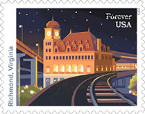
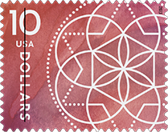
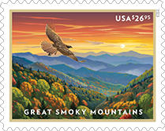
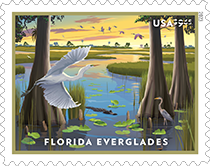
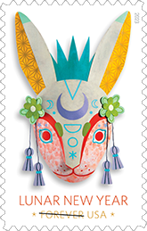

Latest News
|  |
Railroad Stations Forever StampsMarch 9 | Cincinnati, OH | 5 designs in PSA pane of 20 Noteworthy railroad stations began brightening the American landscape by the 1870s and, although many were torn down once they had outlived their original purpose, hundreds survived. This issuance of 20 stamps features five architectural gems that continue to play important roles in their communities: Tamaqua Station in Pennsylvania; Point of Rocks Station in Maryland; Main Street Station in Richmond, VA; Santa Fe Station in San Bernardino, CA; and Union Terminal in Cincinnati, OH. Passenger trains stop at all of them except Tamaqua.Derry Noyes served as art director. Down the Street Designs created the digital illustrations and typography. |
 |
Toni Morrison Forever StampMarch 7 | Princeton, NJ | PSA pane of 20 Author Toni Morrison (1931-2019) is honored in this stamp issuance.
Her artfully crafted novels explored the diverse voices and multifaceted experiences of African Americans.
Known for such books as "The Bluest Eye," "Song of Solomon" and "Beloved," Morrison was the rare author
who achieved both bestseller status and critical success. In 1993,
she made history as the first African American woman to win the Nobel Prize for Literature. The stamp
features a photograph of Morrison taken in 2000. Art director Ethel Kessler designed the stamp with photography by Deborah. |
|  |
$10 Floral Geometry StampFebruary 24 | San Diego, CA | PSA pane of 4 A new Floral Geometry stamp, denominated at $10, will be available for purchase, complementing the similarly designed $2 and $5 stamps issued in 2022. The stamps lend an elegant and contemporary appearance to packages, large envelopes and other mailings. The stamp art features a series of overlapping geometric shapes that mimic the symmetry of floral patterns found in nature. According to the Postal People, “the watercolor background and the glimmer of the foil-stamped design and typography create a sophisticated look.” The stamp will be issued in panes of four. The stamps were designed and created by the firm Spaeth Hill. Antonio Alcalá was the art director. |
|  |
Great Smoky Mountains Stamp (Priority Mail Express)January 22 | Gatlinburg, TN | PSA pane of 4 Home to the most visited national park in the United States, the Great Smoky Mountains boast extensive national forests and a vast array of native plants and animals. Equally rich in history, folkways and culture, they are an American treasure, which the Postal Service celebrates with this new Priority Mail Express stamp. The stamp art captures an iconic mountain scene located near Newfound Gap between Gatlinburg, TN, and Cherokee, NC. In the foreground, a red-tailed hawk flies over the landscape. Art director Greg Breeding designed the stamp with original art by Dan Cosgrove. |
|  |
Florida Everglades $9.95 Priority Mail StampJanuary 22 | Homestead, FL | PSA pane of 4 Spanning some 2 million acres in southern Florida, from Lake Okeechobee to Florida Bay, the Everglades is one of the largest wetlands in the world and the most significant breeding ground for tropical wading birds in North America. This new Priority Mail stamp celebrates the Florida Everglades with stamp art that shows a sawgrass marsh as seen at sunset from the edge of a cypress dome. Designed by art director Greg Breeding, the stamp showcases a digital illustration by Dan Cosgrove. The Florida Everglades Priority Mail stamp will be issued in Homestead, Fla., on Jan. 22 without a ceremony. The Everglades National Park’s Visitors Center is named after Ernest F. Coe, who was a leading advocate for the establishment of the Everglades National Park. |
|  |
Year of the Rabbit Lunar New Year Forever StampJanuary 12 | San Francisco, CA | PSA pane of 20 The first commemorative to be released in the Gregorian calendar new year will be the Year of the Rabbit stamp—for the Lunar Year that runs from January 22, 2023 until February 9, 2024. San Francisco was chosen for the First Day of Issue because it has a large Asian population that will be celebrating the Lunar New Year. Calling to mind the elaborately decorated masks used in the dragon or lion dances often performed in Lunar New Year parades, this 3-dimensional mask depicting a rabbit is a contemporary take on the long tradition of paper-cut folk-art crafts created during this auspicious time of year. This is the fourth of 12 stamps in the latest USPS Lunar New Year series, as well as in the Chinese Zodiac. The 12 animals in the Chinese Zodiac are, in order, the Rat, Ox, Tiger, Rabbit, Dragon, Snake, Horse, Goat, Monkey, Rooster, Dog, and Pig. |